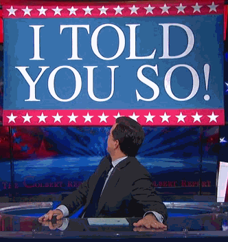
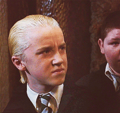
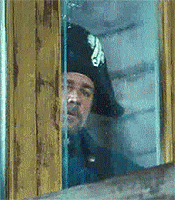

When the client loves the new feature, which I personally really don’t like
When I leave the office after a long day with no breaks
When PM wants me to just work on a “small” task with low priority, so it’s done
When I’m the last one in the office and I finally fix a bug that’s bugging me the whole day
When I find a vegetable I really hate in our food - and it wasn’t mentioned on the list
When we have different views on a solution and mine is the correct one

When we have different views on a solution and mine is the wrong one

When the new guy commits untested code which can’t possibly work

When I hear people in the dining room, but I still have to deploy something and can’t go

When the restart of a server takes a long time
When I am 100% sure, that my coding suggestion will work

When Patrik leaves the berlin office early
When I see some code from a new guy which violates a lot of conventions

When we finally open-sourced our main software library

When I start on a project without limitations or specifications

When we talk directly to a customer

When PM asks if we tested ALL features, which are deployed right now
When I want to show off my coding skills with Patrik standing behind me

When I’m about to commit some really shitty code
When I hear that we’ll have to release one week earlier
←
→
/
#